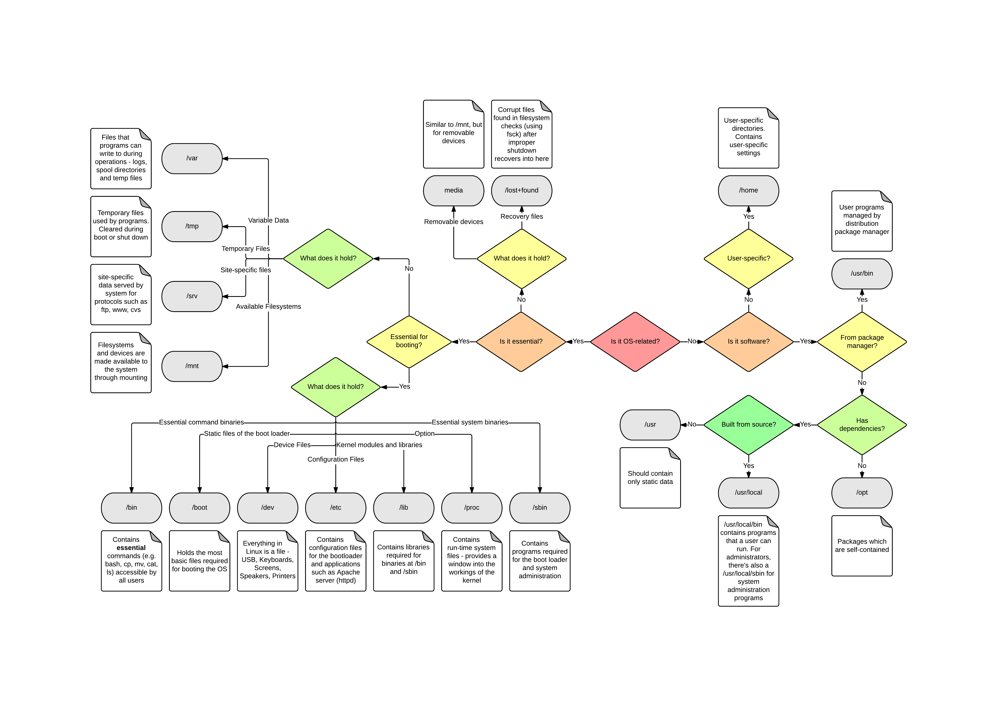
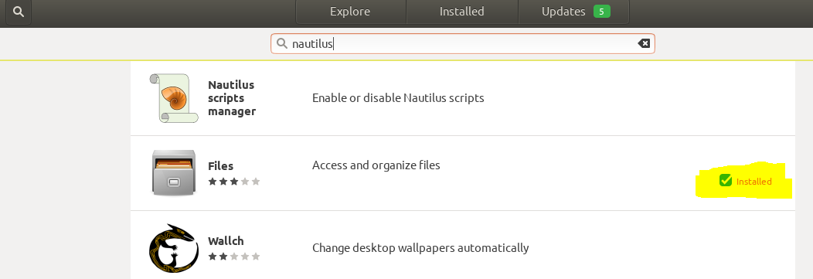
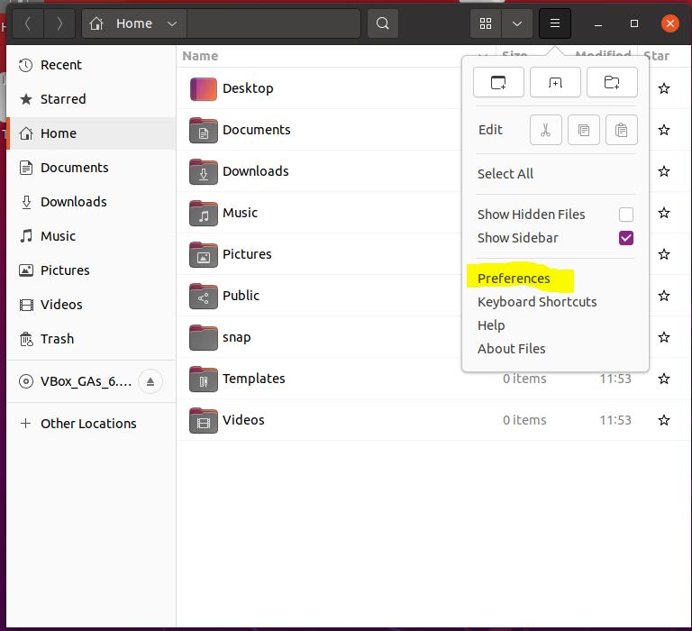
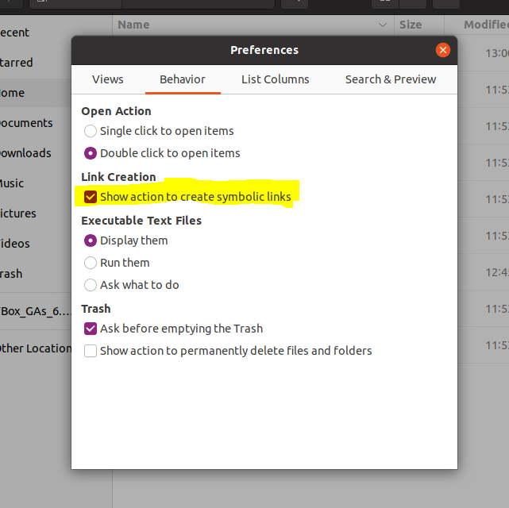
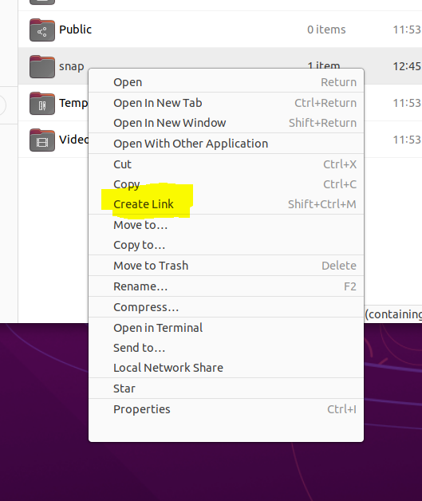
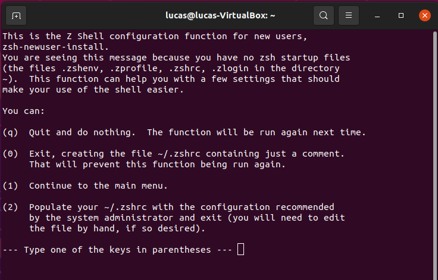
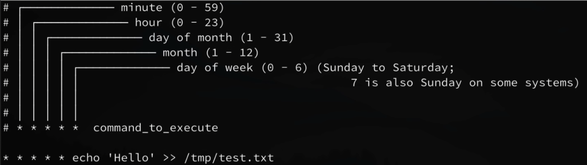
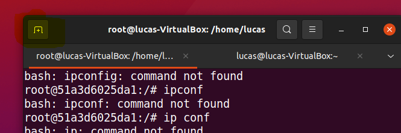

Chapter 3 Linux
3.1 Podstawowe pojecia
PID-process identifier : PID is a unique number that identifies each running processes in an operating system).
3.2 Architektura Linuxa
3.2.1 System plików

3.3 Make file
Prosty przyklad: makefiletutorial, link
3.4 Repozytoria
3.5 Dostepy / Uzytkownicy
3.5.1 Polecenia
Jak nazywa sie uzytkownik na ktorym jestem zalogowany:
whoami
Lista uzytownikow w systemie
cat /etc/passwd
Zmiana uzytkownika ktory jest rootem
sudo su # (su od switch user)
Zmiana na uzytkownika ‘lucas’
sudo su lucas
Dodaj uzytkownika ‘barbara’
adduser barbara # jest jeszcze polecenie 'useradd', ale niezalecane bo daje mniej mozliwosci
lista grup do ktorych nalezy aktualnie zalogowany uzytkownik
groups # domyslnie chyba dla kazdego usera jest tworzona grupa o jego nazwie.
lista wszystkich czlonkow danej grupy.
getent group lucas
lista wszystkich grup w systemie
less /etc/group
Uzytkownicy - informacje
3.5.1.1 sudo su
To explain this you need to know what the programs do:
su- The commandsuis used to switch to another user (s witch u ser), but you can also switch to the root user by invoking the command with no parameter.suasks you for the password of the user to switch, after typing the password you switched to the user’s environment.sudo-sudois meant to run a single command with root privileges. But unlikesuit prompts you for the password of the current user. This user must be in the sudoers file (or a group that is in the sudoers file). By default, Ubuntu “remembers” your password for 15 minutes, so that you don’t have to type your password every time.bash- A text-interface to interact with the computer. It’s important to understand the difference between login, non-login, interactive and non-interactive shells:
Types of shells:
login shell: A login shell logs you into the system as a specified user, necessary for this is a username and password. When you hit ctrl+alt+F1 to login into a virtual terminal you get after successful login a login shell.
non-login shell: A shell that is executed without logging in, necessary for this is a currently logged-in user. When you open a graphic terminal in gnome it is a non-login shell.
interactive shell: A shell (login or non-login) where you can interactively type or interrupt commands. For example a gnome terminal.
non-interactive shell: A (sub)shell that is probably run from an automated process. You will see neither input nor output.
So the cases are:
sudo suCallssudowith the commandsu. Bash is called as interactive non-login shell. So bash only executes.bashrc. You can see that after switching to root you are still in the same directory:user@host:~$ sudo su root@host:/home/user#sudo su -This time it is a login shell, so/etc/profile,.profileand.bashrcare executed and you will find yourself in root’s home directory with root’s environment.sudo -iIt is nearly the same assudo su -The -i (simulate initial login) option runs the shell specified by the password database entry of the target user as a login shell. This means that login-specific resource files such as.profile,.bashrcor.loginwill be read and executed by the shell.sudo /bin/bashThis means that you callsudowith the command/bin/bash./bin/bashis started as non-login shell so all the dot-files are not executed, but bash itself reads.bashrcof the calling user. Your environment stays the same. Your home will not be root’s home. So you are root, but in the environment of the calling user.sudo -sreads the$SHELLvariable and executes the content. If$SHELLcontains/bin/bashit invokessudo /bin/bash(see above).
3.5.2 Plik shadow - zarzadzanie
Praca z tym plikiem jest potrzebne np. w sytuacji kiedy chcemy komuś zmienic haslo.
3.5.3 Admin vs Root user vs Super User
Root user = Super User
Actually the Admin user does not have root privileges. The “root” user has full access to everything and anything in the OS X system including System files and user accounts. The Admin user does not have access to the System files or the files in other user accounts than his/her own. In order to have “root” user access you must first enable the “root user” password, which is done using the NetInfo Manager. In Unix the “root” user is also referred to as the “superuser.”
3.6 Screens
screen command in Linux provides the ability to launch and use multiple shell sessions from a single ssh session. When a process is started with ‘screen,’ the process can be detached from session & then can reattach the session at a later time. When the session is detached, the process that was originally started from the screen is still running and managed by the screen itself. The process can then re-attach the session at a later time, and the terminals are still there, the way it was left. Poza powyższym zastosowaniem (zdalna obsługa wielu sesji), screen mozna tez uzyc do rozwiazania problemu zwiazanego z tym, ze jezeli rozlaczymy sie z serwerem linuxowym to nasze sesja się przerwie i nasze procesy przestana dzialac. Tworzac screena mozemy latwo rozwiazac ten problem (link)
# lista screenow
Screen -ls #(jezeli jakisc screen ma status ‘attach’ to znaczy ze gdzie jest otwarte okno w ktorym mozna na nim pracowac)
# tworzenie nowego screenu
Screen -S <name>
# sprawdzanie czy jestem w sesji : https://www.ostechnix.com/how-to-check-if-you-are-in-screen-session-or-not-in-linux/
echo $STY # sprawdzenie czy mój ekran jest w jakiejś sesji (jeżeli nie, to nie zwróci nic)
# wychodzenie z screenu bez jego zamykania (deatching) :
‘Ctrl+a’ i po chwili naciska ‘d’
# wychodzenie z screenu z zamykaniem (killing) : Ctrl+a’ i po chwili naciska ‘k’. Potem jeszcze zatwierdzam przez ‘y’
# zamykanie screen (quit):
screen -S PID -X quit
# zamykanie screen (kill):
screen -X -S SCREENID kill
#wchodzenie do sesji
screen -r <numer>
# usuwanie martwych screenow
screen -wipe
# usuwanie konkretnego matwego screena
screen -wipe PID 3.7 Red Hat
3.8 Ubuntu
3.8.1 Instalacja
3.8.1.1 Virtual Box na Windows 10
filmik: instalacja plus rozwiazanie problemu malego okna (przetestowane na Ubuntu 21.04): link
3.8.2 Nautilus
3.8.2.1 Creating links
Sprawdzam czy Nautilus jest zainstalowany (wystepuje pod nazwa “Files”):

Uruchamiam Nautilusa i przechodze do jego Preferences.

W Preferences zaznaczam opcje umozlwiajaca dostep do tworzenia linkow w menu kontekstowym. :

Teraz w Nautilusie w menu konteksowym pliku/folderu mamy mozliwosc tworzenia linkow:

Taki link po utworzeniu np. metoda “Drag and drop” moge sobie przerzucic na pulpit.
3.9 Terminal-Shell-console
Domyslnie jako shell funkcjonuje bash. Ale są alternatywny. Najbardziej popularną jest zsh który ma liczne pluginy pozwalajace go bogato skonfigurowac.
3.9.1 ZSH Instalacja i konfiguracja
Instalacja : youtube
krok 1:
zaktualizowanie listy dostepnych pakietow
sudo apt-get update
krok 2:
instalacja:
sudo apt-get install zsh
krok 3:
Konfiguracja. Tutaj tez zostanie utworzony plik konfiguracyjny
Wpisujemy:
zsh
i dostajemy:

Uwaga o lokalizacji pliku konfiguracyjnego:
Przy domyslnym ustawieniu sciezki utworzonego pliku konfiguracyjnego ~/.zshrs plik utworzy się w katalogu home/<nazwa_uzytkownika>/
Poniewaz nazwa pliku zaczyna sie od kropki, bedzie to plik ukryty.
krok 4:
Ustawienie zsh jako domyslnej powloki.
Po zaintalowaniu zsh nie staje sie on automatycznie domyslna powloka. Mozemy to sprawdzic wpisujac:
echo $SHELL
zwroci nam ze domyslnie dalej uzywamy bash:
/bin/bash Zeby dokonac zmiany:
chsh -s /usr/bin/zsh # . Zakladam ze zsh jest w sciezce /usr/bin/. Nazwa komendy chsh jest od ‘change shell’
Nastepnie musze sie wylogowa i zalogowa do ubuntu (nie wystarczy nowa sesja w terminalu).
krok 5:
Opcjonalne instalacja oh-my-zsh
Musimy miec zainstalowanego Git. Mozemy sprawdzic czy go mamy np. poprzez:
apt-cache policy git
Jezeli go nie mamy to go instalujemy:
sudo apt install git-all
Dalej instalujemy oh-my-zsh:
sh -c "$(wget https://raw.github.com/ohmyzsh/ohmyzsh/master/tools/install.sh -O -)" Po wykonaniu powyzszej komendy bedzie od razu aktywny.
krok 6:
Uzywanie plugins: link
Lista dostepnych pluginow jest tutaj: link
Kazdy plug in ma swoja instrukcje instalacji. Jezeli mamy zainstalowany oh-my-sh to mozemy korzystac z intrukcji istalacji dedykowanej wlasnie pod niego.
Naciekawsze pluginy:
zsh-autosuggestions - podpowiedz skladni
zsh-syntax-highlighting - podkreslanie skladni
3.9.2 Skladnia
Super sciaga (rowniez do pisania skryptow do plikow sh): devhints.
3.9.2.1 Ogólne zasady
3.9.2.1.1 #!
3.9.2.1.2 When the first characters in a script are #!, that is called the shebang. If your file starts with #!/path/to/something the standard is to run something and pass the rest of the file to that program as an input.
3.9.2.1.3
Uruchamienie skrypty sh
bash nazwa_skryptu
lub
sh nazwa skryptu
3.9.2.1.4 Vertical bar |
The vertical bar character is used to represent a pipe in commands in Linux and other Unix-like operating systems. A pipe is a form of redirection that is used to send the output of one program to another program for further processing.
3.9.2.1.7 list vs array
3.9.2.1.8 Nawiasy
3.9.2.2 Przykłady
Co to robi: ${2:-${1}}
It means “Use the second argument if the first is undefined or empty, else use the first.” The form “${2-${1}}” (no ‘:’) means “Use the second if the first is not defined (but if the first is defined as empty, use it).”
3.9.2.3 Skroty oznaczenia
^X - Ctrl + X
3.9.2.4 Zmienne
Mamy 2 rodzaje zmiennych:
Environment variables (zmienne środowiskowe) are variables that are available system-wide and are inherited by all spawned child processes and shells.
Shell variables are variables that apply only to the current shell instance. Each shell such as
zshandbash, has its own set of internal shell variables.
Uzywanie zmiennych srodowiskowych : link
Typy zmiennych (int, string itp):
link - generalnie nie ma typów w bash
ale można je wymuszać: link
Używanie cudzysłowia przy zmiennych
List="one two three"
for a in $List # Splits the variable in parts at whitespace.
do
echo "$a"
done
# one
# two
# three
echo "---"
for a in "$List" # Preserves whitespace in a single variable.
do # ^ ^
echo "$a"
done
# one two three3.9.2.5 Nawiasy
3.9.2.6 Special character
3.9.2.7 Strumienie
3.9.3 Komendy bash
Lista 37 najwazniejszych komand z opiesem: link (brakuje na liscie cp)
Lista pelna komend: link
3.9.3.1 cat
3.9.3.3 rm
rm vs rmdir:
You can also use the rm command to delete directories by using the -r option alongside the command. So what is the basic difference between both the commands? Well, the answer is simple. The rm command can be used to delete non-empty directories as well but rmdir command is used to delete only empty directories. There is absolutely no way to delete non-empty directories using the rmdir command.
3.9.3.4 tar
3.9.3.5 let
Using let is similar to enclosing an arithmetic expression in double parentheses, for instance:
(( expr ))3.10 Networking
3.10.1 polecenie netstat
https://www.tecmint.com/20-netstat-commands-for-linux-network-management/
Sprawdzenie socketow
# przyklad dla portu majacego w nazwie ':80'. dzieki 'p' bedzie wyswietlony PID procesu.
sudo netstat -nlp |grep :803.11 Scheduling
W linuxie sluzy do tego cron.
# czy sa jakies zaplanowane zadania dla aktualnego uzytkownika:
crontab -l
# edycja pliku domyslnie ustawionym w linuxie edytorem
crontab -e
Na powyzszym obrazie poszczegolne gwiazdki (rozdzielone spacje) odpowiadaja poszczegolnym jednostka czasu, co jest zmapowane liniemi.
Przyklady skladni:
# Przykad sladni dla jednoska= minuta
# kazda minuta
* * * * * echo 'Hello' >>/temp/test/txt
#minuty od 0 do 5
0-5 * * * * echo 'Hello' >>/temp/test/txt
# minuty 1,10,15,20
1,10,15,20 * * * * echo 'Hello' >>/temp/test/txt
# co dziesiata minuta (tutaj minut)
*/10 * * * * echo 'Hello' >>/temp/test/txtW samym pliku warto dodawac komentarze (po znaku ‘#’)
Rozne przyklady:
# EMpty temp folder every FRoday at 5pm
0 5 * * 5 rm -rf /tmp/*
# backup images to Google DRove every night at midnight3.12 Rozne
Windows Device Manager equivalent
sudo apt install hardinfo
hardinfo
3.12.1 stdin, stdout and stderr
3.12.2 Uzywanie dev/null
https://linuxhint.com/what_is_dev_null/
https://www.journaldev.com/35489/dev-null-in-linux
pushd w polaczeniu z dev/null: link
3.12.3 Exit status
https://www.cyberciti.biz/faq/bash-get-exit-code-of-command/
3.12.4 sh vs source vs bin
https://stackoverflow.com/questions/13786499/what-is-the-difference-between-using-sh-and-source
3.12.5 Domyslny edytor
Przyklad zmiany na edytor nano.
export EDITOR=/usr/bin/nano
3.12.6 Split okna terminala
W lewym gornym rogu jest krzyzyk ktory otworzy nowe okno poprzez split ekranu.
